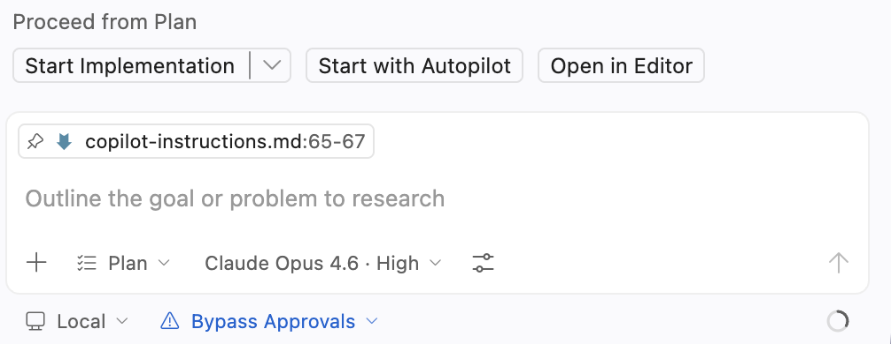
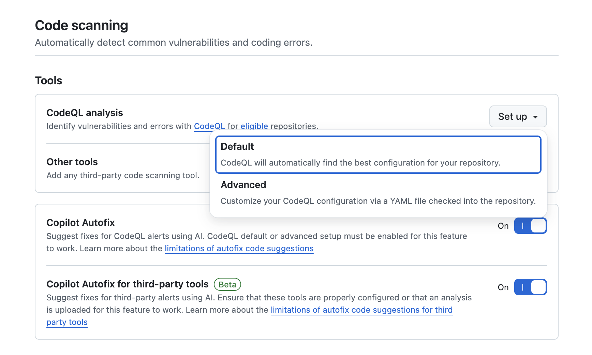

GitHub Copilotワークショップへようこそ！

このワークショップでは、2008年時代のレガシーPHPウェブサイト（ヒカリ / Hikari） を題材に、GitHub Copilot の全機能を活用してモダンなウェブアプリケーションに変革する体験をしていただきます。
本日のゴール
- GitHub Copilot のセットアップとカスタマイズ方法を理解する
- Copilot Agent Mode でレガシーサイトを Next.js + TypeScript + Tailwind CSS に移行する
- 自動テスト、コード品質チェック、セキュリティスキャンを設定する
- Cloud Agent による自律的な機能実装を体験する
- Agentic Workflow で CI/CD パイプラインに AI を組み込む
- Copilot CLI で新規アプリケーションを構築する
本日のアジェンダ
パート | 内容 | 概要 |
Setup | プロジェクトセットアップ | テンプレートリポジトリから Codespaces を起動 |
1 | セットアップ＆カスタマイズ | /init、カスタム指示、Skill 作成、MCP 設定 |
2 | 実装：レガシーサイトの移行 | Plan Mode → Next.js + TypeScript + Tailwind への移行 |
3 | 自動テストと Actions | Vitest + Playwright テスト、CI ワークフロー |
4 | コード品質 | Copilot Code Review、GHAS 設定 |
5 | Cloud Agent | Issue からの自律的な機能実装 |
6 | Agentic Workflow | PAT 作成、テストカバレッジ自動更新 |
7 | CLI | AI 利用状況ダッシュボードの構築 |
前提条件
以下のいずれかの環境をご用意ください：
オプション A: 個人環境
- Visual Studio Code がインストールされていること
- GitHub Copilot のライセンスがあること（Pro / Pro+ / Business / Enterprise プラン推奨）
- GitHub アカウントを持っていること
オプション B: 企業環境（お客様向け）
- 以下の機能が有効化されたプライベート Organization を持っていること：
- GitHub Actions
- GitHub Copilot（Pro+ / Business / Enterprise）
- GitHub Advanced Security (GHAS)
- Organization 内でリポジトリを作成できる権限があること
このワークショップでは、以下の GitHub リポジトリを使用します：
プロジェクトURL: https://github.com/theomonfort/2026-Github-Copilot-Workshop-Nodejs
ステップ1: テンプレートからリポジトリを作成する
- プロジェクト URL をブラウザで開く
- 右上の Use this template ボタンをクリックし、Create a new repository を選択
- リポジトリ作成画面で以下を設定：
Owner（オーナー）の選択
個人で参加の場合：
- Owner は 自分のアカウント を選択
- Visibility は Public を選択（Free プランの場合、Public でないと一部機能が制限されます）
企業の Organization で参加の場合：
- Owner は Copilot / Actions / GHAS / Codespaces などが有効化された Organization を選択
- Visibility は Private を選択
Repository name（リポジトリ名）
- 任意の名前を入力してください（例:
hands-on-yourname）
- Create repository をクリック
ステップ2: Codespaces で開発環境を起動する
- 作成したリポジトリのページで、緑色の Code ボタンをクリック
- Codespaces タブを選択
- Create codespace on main をクリック

DevContainer が自動的に Node.js 20 環境をセットアップし、以下が事前にインストールされます：
- GitHub Copilot & Copilot Chat 拡張機能
- Live Server 拡張機能（プレビュー用）
- GitHub CLI
- GitHub MCP Server（自動検出有効化済み）
ステップ3: レガシーサイトを確認する
VS Code のターミナルを開き、以下のコマンドを実行してレガシーサイトを起動します：
cd hikari-legacy-php
php -S localhost:8080
Codespace がポート 8080 を自動検出し、「Open in Browser」 のポップアップが表示されます。クリックしてブラウザでサイトを確認してください。
これが今日のリファクタリング対象です。
1.1 — Copilot でリポジトリを理解する
まず、Copilot にこのリポジトリの全体像を把握させましょう。
Copilot Chat で以下を実行します：
/init
/init コマンドにより、Copilot がリポジトリをスキャンし、copilot-instructions.md を自動生成します。（⏱ 約1分）
生成された内容を確認し、レガシー PHP サイトの構造が正しく認識されていることを確認してください。
1.2 — カスタム指示を追加する
/init で生成された copilot-instructions.md を日本語化し、移行ガイドラインを追加しましょう。Copilot Chat で以下のプロンプトを入力してください：
copilot-instructions.md を日本語にして、以下の内容を追記してください。既存の内容は残してください。
- 言語設定: すべての会話は日本語で行う
- 移行先の技術スタック: Next.js (App Router) + TypeScript + Tailwind CSS
- テスト: Vitest + Playwright
- デザイン要件: モダンで洗練されたUI、レスポンシブデザイン（モバイルファースト）、ダークモード対応
- コーディング規約: ESLint + Prettier 準拠、関数コンポーネント + Hooks、型定義は厳格に（any 禁止）
⏱ 約1分
1.3 — フロントエンド Skill を作成する
Copilot に以下のプロンプトを入力して、フロントエンド開発用の Skill を作成してもらいましょう。[自社の会社名] の部分を実際の会社名に置き換えてください：
[自社の会社名] のブランディングに基づいたフロントエンド Skill を作成してください。
ウェブ上でリサーチを行い、ブランドカラー、タイポグラフィ、デザイン原則、コンポーネントパターンを定義してください。
Skill ファイルは .github/skills/ 配下に追加してください。
Copilot がウェブ上で会社のブランド情報をリサーチし、ブランドガイドラインに基づいた Skill ファイルを自動生成します。（⏱ 約3分）
1.4 — MCP Server を確認する
MCP（Model Context Protocol）Server が正しく接続されていることを確認しましょう。
GitHub MCP Server の確認
.vscode/mcp.json に GitHub MCP Server が設定されていることを確認します：
{
"servers": {
"github-mcp-server": {
"type": "http",
"url": "https://api.githubcopilot.com/mcp/"
}
}
}
Copilot Chat で以下を入力して、GitHub との接続を確認します：
このリポジトリの情報を教えてください（リポジトリ名、Issue 一覧、最新コミット）
Playwright MCP Server の追加
テスト用に Playwright MCP Server を追加します。
- Copilot Chat の入力欄にある 🔧 ツールボタン（モデル選択の右側）をクリック
- 「Add MCP Server」 を選択
- 「Browse MCP Servers」 をクリック
- 初回の場合は 「Enable MCP Servers Marketplace」 をクリックして有効化
- 「Playwright」 で検索し、Microsoft の Playwright MCP Server を選択
- 「Install in Workspace」 をクリックしてインストール
インストール後、.vscode/mcp.json に Playwright が追加されていることを確認してください：
{
"servers": {
"github-mcp-server": {
"type": "http",
"url": "https://api.githubcopilot.com/mcp/"
},
"playwright": {
"command": "npx",
"args": ["@anthropic-ai/mcp-server-playwright"]
}
}
}
Playwright MCP Server が正しく動作することを確認するために、以下のプロンプトを試してみましょう：
Playwright を使って https://www.nikon.com を開き、スクリーンショットを撮ってください
スクリーンショットはプロジェクトのルートフォルダに保存されます。エクスプローラーで確認してみましょう。
2.1 — Plan Mode で移行計画を立てる
いきなり実装に入るのではなく、まず Plan Mode で詳細な移行計画を立てましょう。
- Copilot Chat のモデル選択の横にあるモード切り替えから 「Plan」 を選択
- 以下のプロンプトを入力：
このレガシー PHP サイトのトップページ（index.php）のみを Next.js に移行する計画を立ててください。
- Copilot が
copilot-instructions.mdの内容を踏まえて、詳細な移行計画を作成します（⏱ 約1分30秒） - 計画の内容を確認・調整
2.2 — 移行を実行する
計画が確定したら、「Start with Autopilot」 ボタンをクリックして実装を開始します。

⏱ 約15分
Copilot エージェントが以下を自動的に実行します：
- Next.js プロジェクトの初期化
- TypeScript 設定
- Tailwind CSS の設定
- レガシー HTML からのコンテンツ移行
- コンポーネントの分割・作成
- レスポンシブレイアウトの実装
2.3 — 結果を確認する
移行が完了したら、ブラウザでモダナイズされたサイトを確認しましょう。
移行が完了したサイトを起動して、ブラウザで確認させてください。
Before → After の違いを確認してみてください！
3.1 — 自動テストを作成する
移行したサイトに対して、自動テストを作成しましょう。
移行した Next.js サイトに対して、以下のテストを作成してください：
1. Vitest によるユニットテスト：
- 各コンポーネントのレンダリングテスト
- ProductCard コンポーネントの props テスト
- Navigation コンポーネントのリンクテスト
2. Playwright による E2E テスト：
- トップページの表示確認
- ナビゲーションの動作確認
- レスポンシブデザインの確認（モバイル・タブレット・デスクトップ）
- 各製品カテゴリセクションへのスクロール
テストは tests/ ディレクトリに配置してください。
⏱ 約3〜5分
3.2 — GitHub Actions ワークフローを作成する
テストを PR 作成時に自動実行する GitHub Actions ワークフローを設定します。
以下の GitHub Actions ワークフローを作成してください：
1. PR 作成・更新時にトリガー
2. Node.js 20 環境でテストを実行
3. Vitest ユニットテストを実行
4. Playwright E2E テストを実行
5. テスト結果を PR にコメントとして投稿
ワークフローファイルは .github/workflows/test.yml に配置してください。
⏱ 約2分
3.3 — Dependency Review を追加する（ボーナス）
依存関係の脆弱性を PR 時に自動チェックする Dependency Review を追加します。
GitHub Actions に Dependency Review のワークフローを追加してください。
PR 作成時に依存関係の脆弱性を自動チェックし、問題があればコメントで通知するようにしてください。
⏱ 約1分
4.1 — Copilot Auto Code Review を設定する
PR 作成時に Copilot が自動的にコードレビューを行う設定をします。
- リポジトリの Settings → Branches → Rulesets
- Require a pull request before merging を有効化
- Automatically request Copilot code review にチェック

4.2 — GitHub Advanced Security (GHAS) を設定する
- リポジトリの Settings → Security → Code security
- Code scanning セクションで Set up → Default を選択
- Enable CodeQL をクリック

4.3 — コードを Push して確認する
ここまでの変更をすべてコミットして Push しましょう。
すべての変更を git add して、適切なコミットメッセージでコミットし、
feature/modernize ブランチにプッシュして、main ブランチへの Pull Request を作成してください。
PR が作成されると、以下が自動的に実行されます：
- ✅ Copilot Code Review（自動レビュー）
- ✅ GitHub Actions テスト（Vitest + Playwright）
- ✅ CodeQL セキュリティスキャン
- ✅ Dependency Review
5.1 — Copilot の設定を確認する
Cloud Agent を使用するために、以下の設定を確認します：
- GitHubの右上のプロフィールアイコン → Copilot settings
- Copilot Cloud Agent が有効になっていることを確認
5.2 — Issue を作成して Cloud Agent をアサインする
2つの Issue を作成し、Copilot Cloud Agent に自律的に実装させます。
Issue 1: ダークモード / ライトモード切り替え
以下の内容で Issue を作成してください：
タイトル: Support dark/light mode toggle
## 概要
ウェブサイトにダークモード / ライトモードの切り替え機能を追加する。
## 要件
- ヘッダーにトグルボタンを配置
- ユーザーの選択を localStorage に保存
- システムのカラースキーム設定を初期値として使用
- Tailwind CSS の dark: プレフィックスを活用
- スムーズなトランジションアニメーション
## 受け入れ条件
- [ ] トグルボタンが表示される
- [ ] クリックでテーマが切り替わる
- [ ] リロード後もテーマが保持される
- [ ] 全ページでダークモードが正しく表示される
Issue 2: 英語対応
タイトル: Support English language on the website
## 概要
ウェブサイトを多言語対応（日本語・英語）にする。
## 要件
- next-intl または同等のi18nライブラリを使用
- 言語切り替えボタンをヘッダーに追加
- すべてのテキストコンテンツを翻訳ファイルで管理
- URL パスによる言語切り替え（/en, /ja）
## 受け入れ条件
- [ ] 日本語と英語の切り替えができる
- [ ] すべてのページが両言語で表示される
- [ ] 言語選択がURLに反映される
各 Issue の Assignees で Copilot を選択してアサインしてください。
Cloud Agent が自律的にコードを実装し、PR を作成します。

6.1 — Personal Access Token (PAT) を作成する
Agentic Workflow で Copilot を活用するために PAT を作成します。
- https://github.com/settings/personal-access-tokens/new にアクセス
- 設定内容：
- Token name:
copilot-workshop-agent - Resource owner: 自分のアカウント
- Repository access: Public repositories
- Permissions: Copilot Requests を有効化
- Token name:
- 作成した PAT をコピー
リポジトリシークレットに設定
- リポジトリの Settings → Secrets and variables → Actions
- New repository secret をクリック
- Name:
COPILOT_GITHUB_TOKEN、Value: 作成した PAT
Workflow permissions の確認
- Settings → Actions → General
- Allow GitHub Actions to create and approve pull requests にチェック
6.2 — テストカバレッジ自動更新ワークフローを作成する
新しい機能がマージされた時に、テストカバレッジレポートを自動更新するワークフローを作成しましょう。
エージェントモードで以下を実行：
以下の Agentic Workflow を作成してください。
参照: https://github.com/github/gh-aw/blob/main/create.md
ワークフローの目的：
- main ブランチへの push 時にトリガー
- テストを実行してカバレッジレポートを生成
- カバレッジ結果を README.md のバッジとして自動更新
- 変更がある場合は PR を自動作成
ワークフローファイルは .github/workflows/coverage-update.md に配置してください。
7.1 — Copilot CLI を起動する
VS Code のターミナルで Copilot CLI を起動します：
copilot
7.2 — AI 利用状況ダッシュボードを構築する
Copilot CLI を使って、組織内の AI 利用状況を可視化するウェブサイトを構築します。
準備
/allow-all
/model
最も高性能なモデル（例: Claude Opus 4.6）を選択してください。
実装
Shift+Tab で Autopilot モードに切り替えた後、以下のプロンプトを実行：
/fleet 組織内の GitHub Copilot 利用状況を可視化するダッシュボード Web アプリケーションを ai-usage-dashboard/ ディレクトリに構築してください。
要件:
- フレームワーク: Next.js + TypeScript + Tailwind CSS
- GitHub Copilot Metrics API を使用してデータを取得
- エンドポイント: GET /orgs/{org}/copilot/metrics
- 認証: Bearer Token（環境変数 GITHUB_TOKEN から取得）
- ダッシュボード機能:
- アクティブユーザー数の推移グラフ
- 言語別のコード提案受入率
- 日別・週別の利用統計
- チャット vs コード補完の利用比率
- チャート: Recharts を使用
- レスポンシブデザイン
- ダークモード対応
- 動作確認まで行ってください
7.3 — 複数モデルでコードレビュー
作成したダッシュボードのコードを複数モデルでレビューします：
/review Claude Opus 4.6 と GPT-5.4 の各モデルで ai-usage-dashboard/ のコードをレビューし、結果を比較して表示してください
7.4 — Chronicle で利用状況を分析する
最後に、Copilot CLI の experimental モードを使って、自分の AI 利用状況を分析してみましょう。
/experimental
Chronicle コマンドを使用して、ワークショップ中の Copilot 利用状況のアドバイスを取得します：
chronicle
今日学んだこと
このワークショップでは、GitHub Copilot の全機能を横断的に体験しました：
- セットアップ＆カスタマイズ —
/init、カスタム指示、Skill 作成、MCP 設定 - Plan Mode による設計 — レガシーサイトの移行計画策定
- Agent Mode による実装 — Next.js + TypeScript + Tailwind CSS への移行
- 自動テスト — Vitest + Playwright + GitHub Actions
- コード品質 — Copilot Code Review + GHAS
- Cloud Agent — Issue からの自律的な機能実装
- Agentic Workflow — CI/CD パイプラインへの AI 統合
- Copilot CLI —
/fleetによる並列実装、/reviewによる複数モデルレビュー
次のステップ
- 実際のプロジェクトで Copilot を活用してみる
- Copilot Extensions や MCP Server を活用して開発ワークフローを拡張する
- Cloud Agent で日常的なタスクを自動化する
- Copilot CLI を日常の開発に組み込む